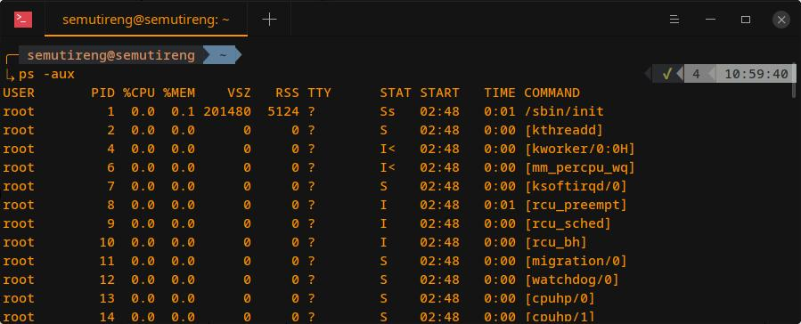
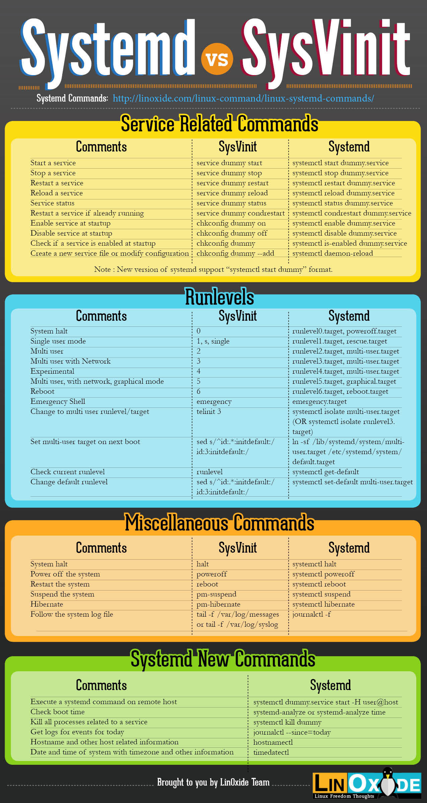
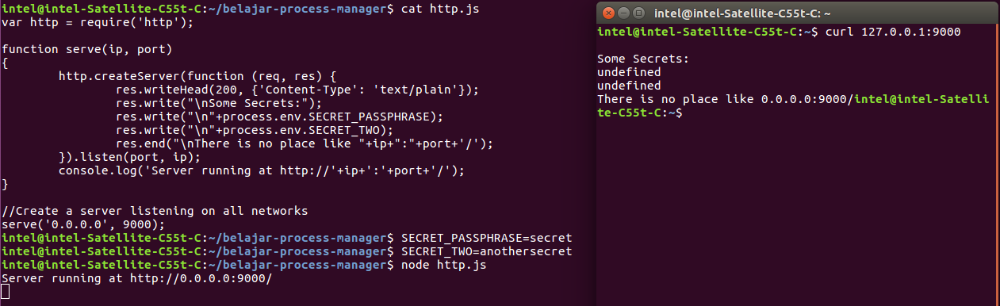
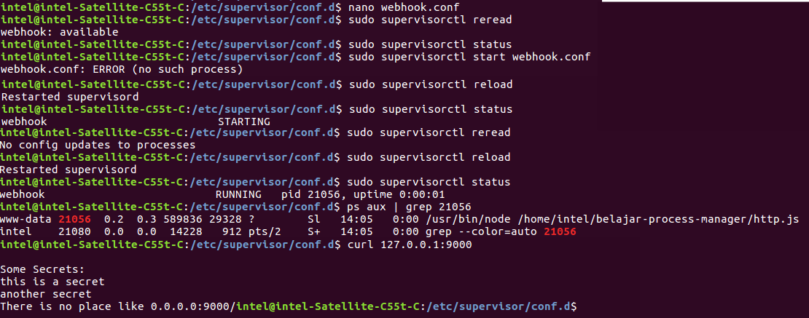

Konsep Program di Linux¶
Secara garis besar sejatinya dalam Distro Linux, setiap program akan dijalankan melalui file binary (execute file binary).
Namun karena kompleksitas penggunaan suatu program menyebabkan banyaknya cara dalam me-manage bagaimana program itu dijalankan ?.
Fungsionalitas suatu program tidak hanya untuk UI interface saja, melainkan bisa untuk proses lain yang lebih kompleks seperti lifetime (berjalan terus menerus), autostart (otomatis ketika startup), fleksibel dan lainnya
Misalkan seperti database, firewall, atau program lain yang membutuhkan cara khusus untuk dijalankan.
Karenanya hal tersebut maka memunculkan istilah istilah baru atau metode baru dalam menjalankan program seperti daemon, service, process dll.
Attention
Untuk bisa mengoperasikan docker, sebaiknya mengetahui dahulu tentang konsep program yang berjalan pada Distro Linux (linux).
Karena ini menyangkut bagaimana suatu service itu bisa berjalan dan akan diaplikasikan ke dalam container.
Hint
Karena materi ini cukup kompleks maka untuk mempermudah pemahaman akan menggunakan software mysql (pengolah database) sebagai implementasi yang sebenarnya.
Process¶
Saat menjalankan perangkat komputer, pasti ada beberapa program yang berjalan.
Program-program ini biasanya disebut dengan process.
Misalnya ketika membuka aplikasi browser Opera atau Chrome, maka akan ada proses yang berjalan untuk menjalankan masing-masing aplikasi ini.
Suatu process dapat diartikan sebagai suatu program yang sedang berjalan atau dieksekusi.
Biasanya terdiri dari instruksi program, pembacaan data dari file, atau input dari pengguna sistem
Background and Foreground Process¶
Ada beberapa tipe process yang berjalan, khususnya di sistem operasi, yaitu foreground dan background.
Foreground Processes
Foreground process adalah Process yang berjalan melalui initialization dan dapat dikontrol melalui terminal session.
Process ini terkadang juga disebut dengan nama interactive processes.
Pengertian lain, Process ini berjalan setelah dijalankan oleh user.
Sehingga tidak dapat berjalan secara otomatis.
Background Processes
Kebalikan dari foreground process, Process ini tidak dikenali pada terminal session.
Sehingga membuat process ini tidak mengharapkan input apapun dari user.
Bagaimana Linux Mengidentifikasi Process ?
Linux merupakan sistem operasi yang Multi-User System, ini memungkinkan tidak hanya satu user saja berjalan pada waktu yang sama.
Agar kernel dapat membedakan setiap instance suatu process, maka perlu dibedakan masing-masing proses secara unique.
Cara membedakannya menggunakan Process ID (PID) dan untuk parent processes menggunakan Parent PID (PPID).
Jadi ada dua kategori proses yang berjalan pada sistem operasi Linux, yaitu:
Parent Processes
Proses yang membuat proses lain pada saat run-time.
Child Processes
Proses yang dibuat oleh proses lain pada saat run-time.
Daemon¶
Attention
Daemon dalam OS Windows lebih dikenal dengan sebutan service, untuk selanjutnya istilah yang digunakan adalah daemon dan service yang berada di environment linux.
Sebelum melangkah lebih jauh akan dijelaskan sedikit mengenai Daemon, service dan process serta hubungan antara ketiganya.
Daemon vs Service vs Process¶
Warning
Cukup banyak referensi mengenai ketiga istilah ini, oleh karenanya penulis akan merangkum pengertian ketiga istilah ini dengan memilih berdasarkan dari referensi yang paling banyak atau memiliki kesamaan yang lebih banyak (majority post reference)
Untuk lebih memudahkan ketiga istilah ini serta hubungan ketiganya maka akan dimulai dari pengertian process.
process seperti yang ditulis diatas adalah program yang berjalan.
Untuk melihat keseluruhan process di linux dapat menggunakan command ps aux
command:
ps aux
Di dalamnya akan terdapat keterangan seperti PID, jumlah penggunaan CPU, memory, waktu saat menjalankan sampai command dalam menjalakannya.
Kemudian Daemon sendiri dapat diartikan sebagai tipe background processes yang berjalan bersamaan dengan sistem operasi (startup) dan akan tetap berjalan (tidak pernah berhenti kecuali dihentikan oleh user).
Terakhir service dapat dikatakan sebagai pembangkit daemon, dalam artian singkat service bisa menjalankan (start) menghentikan (stop) dan restart daemon.
Di linux dikenal command seperti sudo service <package> start, sudo systemctl start <package> atau sudo /etc/init.d/<package> start yang kesemua command itu adalah service yang akan mengurusi daemon (start/stop/restart).
Danger
Penulis tidak terlalu banyak menemukan referensi pada service (sekalipun wikipedia), maka dari itu penulis mengambil kesimpulan berdasarkan opini user di forum.
Asumsi penulis service ini hanyalah berasal dari kultur Unix computing yang mana merupakan padanan kata dari process, atau dalam arti lain service adalah process.
Namun jika dilihat lebih jauh lagi, service ini lebih mengarah ke bentuk file (script) yang nantinya akan menjalankan daemon (baik daemon yang sudah ada seperti mysqld atau suatu script yang dibuat manual dan dijalankan layaknya daemon).
Atau secara singkat dapat diartikan ketika membuka suatu aplikasi yang tidak membutuhkan daemon maka itu bukan disebut sebagai service.
Misalkan saja ketika membuka text editor, browser, atau application di desktop, maka itu bukanlah service karena tidak berhubungan dengan daemon (seperti chrome dan gedit tidak memiliki adanya process dengan berakhiran d), melainkan hanya process saja.
kesimpulan singkat dari penulis adalah bahwa service itu fungsi utamanya untuk me-manage daemon (start/stop/restart)
Fungsionalitas daemon¶
Daemon adalah process yang berjalan sendiri secara periodik/realtime dan berjalan dibelakang layar (background).
Kegunaan Daemon ini adalah menunggu permintaan (request) dari proses lainnya (yang biasanya diberikan user) dan akan menjalankan tugas sesuai dengan request tersebut.
Bila tidak ada request, maka program ini akan berada dalam kondisi idle dan tidak menggunakan resource (CPU, RAM).
Umumnya nama proses daemon di UNIX berakhiran d, misalnya inetd, named , sshd, mysqld, mongod.
Contoh daemon adalah seperti halnya Apache Web Server HTTP daemon (file httpd).
Daemon ini bekerja pada background dan menerima request HTTP pada port tertentu (biasanya 80 atau 8080) dan memberikan respon terhadap request tersebut, berdasarkan tipe dari request tersebut.
Contoh lain adalah seperti software mysql.
ketika menginstall software mysql maka otomatis akan membuat 2 buah application (package) yang berupa daemon sebagai pelayan dan client sebagai peminta layanan.
Biasanya 2 buah package itu disebut mysql-server dan mysql-client.
mysql-server adalah process layanan database (untuk menyimpan data) sedangkan mysql-client adalah untuk mengakses database tersebut (dengan query yang diberikan).
Hint
Konsep docker sejatinya juga memiliki 2 buah package yaitu daemon (mengurusi object seperti container, volume, network, dll) dan juga client (command line untuk mengakses docker object).
Setelah menginstall MySQL, maka akan terdapat file seperti berikut:
/usr/sbin/mysqldFile daemon mysql.
File ini adalah execution utama software mysql.
/usr/bin/mysqlFile client mysql
File ini untuk meminta request ke daemon mysql (mysqld)
/etc/init.d/mysqlUntuk menjalankan service daemon (start and stop mysql daemon/server), file inilah yang dianggap sebagai service (untuk start/stop/restart daemon mysql).
/usr/bin/mysqld_safeIni juga service yang akan menjalankan daemon mysql.
Perbedaannya adalah
/usr/bin/mysqld_safedijalankan dengan cara executable file sedangkan pada/etc/init.d/mysqldijalankan dengan process manager (systemd, sysvinit atau upstart)Note
Tidak semua software/package menyediakan file seperti ini, bahkan biasanya metodenya adalah dengan menggunakan service dan me-execute file daemon
Beberapa ciri yang nampak pada daemon adalah:
daemon berjalan di background dan tidak dalam interactive mode (dalam artian tidak bisa mengakses terminal)
daemon tidak memiliki STDOUT, STDIN, maupun STDERR (berdasarkan dari poin pertama diatas yaitu daemon tidak dapat mengakses terminal),
daemon memiliki file dengan akhiran
d(mysqld, httpd, sshd)daemon tidak memiliki parent proses ID,
daemon berjalan dalam previlege super user (atau user system yang sudah ditentukan oleh software tersebut).
Caption
Dari video tersebut terlihat mysql daemon telah berjalan pada tanggal 1 juni (saat pertama kali PC/laptop booting)
kemudian command mysql adalah untuk login ke mysql.
Nah command mysql (mysql-client) ini adalah untuk berinteraksi dengan daemon mysql (mysql server).
Di dalamnya seperti bash/shell yaitu memiliki STDIN (input query), STDOUT (hasil query).
Command pada terminal linux dan relativitas dengan daemon¶
Dalam Distro Linux, untuk menjalankan program biasanya dapat dengan mengetikkan command di terminal.
Seperti misalkan me-run mysql client seperti contoh diatas.
Command tersebut sejatinya adalah execute file dari directory binary
Semua command di linux sebenarnya dibuat di dalam directory binary seperti:
/bin-> builtin binary seperti commandcat,ls,echo,pwd/sbin-> builtin binary namun membutuhkan super user privileges seperti commandreboot/usr/bin-> general system binary yang berisikan program external yang diinstall seperti commandmysql,7z/usr/sbin-> general system binary program external namun membutuhkan super user privileges seperti commandmysqld,cron,ufw
Singkatnya command di terminal linux adalah menjalankan file executable yang berada di directory binary.
Seperti pada intro diatas, bahwa dalam menjalankan program di linux maka yang di-execute adalah file binary.
Namun perlu diketahui bahwa tidak setiap file di directory binary adalah file binary.
Beberapa diantaranya adalah file script untuk menjalankan file binary yang lain.
file script ini biasa disebut service dalam kultur Distro Linux.
Misalkan adalah file /usr/bin/mysqld_safe yang mana file ini adalah executable file untuk menjalankan daemon mysql.
File ini berisikan script yang cukup kompleks, namun tujuan utamanya adalah mengeksekusi pada file binary /usr/sbin/mysql.
Singkatnya sebenarnya software mysql dapat dijalankan dengan mengetikkan command mysqld_safe.
Sedangkan untuk menjalankan mysql client dapat dijalankan dengan mengetikkan command mysql (execute binary file pada /usr/bin/mysql)
Warning
Tidak setiap software/package di linux menggunakan konsep yang sama seperti mysql diatas.
Biasanya file untuk menjalankan daemon (service) akan menggunakan konsep process manager yang mana akan meletakkan file service di salah satu directory berikut:
/etc/init.d/-> untuk process manager sysvinit/etc/systemd/system/multi-user.target.wants/-> untuk process manager systemd/etc/init/-> untuk process manager upstart
Untuk lebih lengkapnya dapat melihat pada section selanjutnya.
Note
Ada beberapa jenis daemon yang tidak memiliki file akhiran d
contohnya adalah nginx (usr/sbin/nginx).
Tip
Jika ingin membuat adanya custom command (yang dibuat manual), direkomendasikan untuk membuat alias
alias ini bekerja layaknya executable file di terminal.
Caranya cukup mudah yaitu membuat file di directory home (root user) dengan nama .bash_aliases
file ~/.bash_aliases:
alias art="php artisan"
Namun pastikan di file ~/.bashrc akan membaca file .bash_aliases tersebut
ref : https://www.codepolitan.com/cara-menggunakan-bash-alias-5a4d964105599
Hint
Untuk mengetahui dimana file executable suatu command di terminal, dapat mengetikkan command which <nama-command>.
Selain itu untuk mengetahui jenis suatu command, seperti apakah itu executable file, atau alias atau function dapat menggunakan command type <nama-command>.
referensi : https://bash.cyberciti.biz/guide/Type_command
Note
Program seperti sublime text, chrome tidak akan disebut sebagai daemon.
Biasanya semua file dan resource-assets program ini akan berada pada satu directory yang diletakkan di /opt.
Management Process Linux¶
Ada banyak sekali perintah yang dapat digunakan untuk melakukan manajemen process di Linux.
Namun yang paling banyak digunakan adalah ps dan top.
Kedua perintah ini biasanya digunakan oleh pengguna Linux khususnya System Administrator untuk melihat proses yang banyak menggunakan sumber daya (resource).
Top¶
top adalah package di Linux yang dijalankan melalui Terminal di Linux.
Aplikasi ini digunakan untuk memanajemen proses Linux tanpa menggunakan GUI.
Saat dieksekusi, aplikasi ini akan menampilkan daftar semua proses yang sedang berjalan dan setiap detik akan diperbaharui.
Proses yang ditampilkan pada perintah top adalah yang paling besar menggunakan sumber daya.
Tampilan perintah top dapat dilihat pada gambar di bawah ini:
Aplikasi ini didesain tidak perlu menggunakan mouse, tujuannya memang digunakan untuk server.
Sehingga semua fungsi dilakukan menggunakan keyboard.
Berikut ini beberapa keyboard shortcut yang dapat digunakan untuk navigasi:
Keyboard |
Fungsi |
|
Menampilkan jendela bantuan. |
|
Menghapus atau menambahkan field di layout. |
|
Menampilkan atau menghilangkan tampilan informasi beban rata-rata dan informasi uptime. |
|
Menampilkan atau menghilangkan tampilan informasi memori. |
|
Mengurutkan proses berdasarkan penggunaan CPU. |
|
Menutup aplikasi atau jendela pada session saat itu. |
|
Digunakan untuk memperbaharui tampilan atau me-refresh tampilan dengan data terbaru tanpa menunggu waktu refresh. |
Saat menjalankan perintah top, dapat menggunakan beberapa opsi tampilan yang ingin ditampilkan.
Opsi-opsi tersebut beberapa dapat dilihat pada tabel di bawah.
|
Help atau Version: Digunakan untuk menampilkan user manual penggunaan “top” dan menampilkan versi yang terinstal. |
|
Threads-mode operation: Digunakan untuk menampilkan thread secara terpisah. |
|
Secure-mode operation: Menjalankan “top” dengan mode secure. |
|
User-filter-mode: Digunakan untuk menampilkan proses pada user tertentu saja. |
ps¶
ps adalah aplikasi di Linux yang digunakan untuk menampilkan aktif proses yang berjalan pada sistem.
Aplikasi ini dapat digunakan untuk melakukan manajemen proses Linux.
Tampilan hasilnya seperti di bawah ini.
Ada beberapa opsi yang dapat digunakan ketika menggunakan ps sebagai aplikasi monitoring proses.
|
Digunakan untuk menampilkan semua proses. |
|
Digunakan untuk menyaring proses berdasarkan nama/perintah. |
|
Digunakan untuk menampilkan semua informasi proses secara lengkap. |
|
Digunakan untuk menampilkan proses yang sedang berjalan. |
|
Digunakan untuk menampilkan proses pada user tertentu saja. Biasanya diikuti dengan menggunakan nama user yang ingin dilihat prosesnya. |
|
Digunakan untuk menampilkan proses yang menggunakan kata kunci tertentu saja. |
|
Digunakan untuk menampilkan informasi proses berdasarkan Process ID (PID). |
|
Digunakan untuk menampilkan informasi proses berdasarkan Parent Process ID (PPID). |
Jika ingin melihat seluruh proses maka bisa menggunakan command ps aux
Menghentikan process¶
Dalam linux terdapat package kill yang akan menghentikan suatu process berdasarkan PID.
command:
kill -[signal] PID
misalkan adalah menghentikan process dengan PID 3235
command:
kill 3235
Jika tidak diberikan signal maka otomatis akan menggunakan signal default -15.
Namun ada kalanya suatu process masih belum dapat dihentikan dengan command diatas, oleh karenanya bisa menggunakan signal -9 yang mengindikasikan untuk menghentikan process secara keseluruhan.
Signal -9 biasa digunakan apabila process menggunakan resource yang kompleks, seperti socket (contoh pada package seperti httpd, apache atau nginx)
Menghentikan process dari package top¶
Package top juga dapat digunakan untuk menghentikan process.
Caranya adalah dengan mengetik keyboard k kemudian masukkan PID daripada process yang akan dihentikan
Menghentikan Semua process yang Berjalan Menggunakan Nama Aplikasi¶
Selain menggunakan pid dapat juga menghentikan procss dengan nama aplikasi menggunakan package pkill dan killall
command:
pkill firefox
killall firefox
Membuat custom service (manual) menggunakan supervisor, systemd dan upstart¶
System manager/Process manager¶
Dalam Distro Linux, terdapat banyak metode dalam membuat dan menjalankan service.
Diantaranya seperti SysVinit (System five) yang digunakan pada debian 7 kebawah, systemd yang sekarang digunakan di hampir semua distro linux, dan upstart yang digunakan khusus pada ubuntu.
Tiap distro sebenarnya dapat mengaplikasikan ketiga process manager diatas, bahkan di ubuntu semua process manager diatas dapat digunakan.
Berikut contoh penggunaan ketiga process manager tersebut
sysvinit
Pada sysvinit file service akan disimpan di
/etc/init.d/<file-service>command:
sudo service mysql start
systemd
Pada systemd file service akan disimpan di
/etc/systemd/system/<file-service>.servicecommand:
sudo systemctl start mysql
upstart
Pada upstart file service akan disimpan di
/etc/init/<file-service>.confcommand:
sudo initctl start mysql
Attention
Dalam perkembangan sekarang, systemd jauh lebih banyak digunakan.
Namun beberapa developer tidak terlalu menyukai penggunaan systemd terutama pada developer debian karena berbagai alasan.
Beberapa developer debian beralih membuat process manager/service manager sendiri dan mengembangkan OS baru bernama devuan
Sedangkan upstart sendiri sudah sangat jarang digunakan di ubuntu.
Sehingga yang biasa digunakan, terutama setelah penginstallan package external adalah systemd atau sysvinit
Berikut perbedaan antara systemd vs sysvinit
Selain terdapat pula process manager third party bernama supervisor.
Pembuatan Manual Custom Service¶
Attention
Pada materi ini penulis hanya akan membahas mengenai supervisor dan systemd
Penulis tidak akan menjelaskan lebih jauh untuk pembuatan service menggunakan sysvinit atau upstart.
Dikarenakan selain keduanya tidak terlalu digunakan pada saat ini, pembuatan daripada service juga merepotkan.
Supervisor¶
Supervisor adalah package untuk membuat service secara manual yang akan berjalan di background.
Konsepnya sama seperti systemd atau sysvinit.
Namun perlu diketahui bahwa systemd/sysvinit itu adalah init service (untuk memulai process dari awal), artinya supervisor hanyalah process dan tidak akan bisa menggantikan systemd/sysvinit.
Fungsionalitas supervisor¶
Sebenarnya hampir kebanyakan process akan berjalan di foreground, misalkan saja server di Node JS.
Berikut contoh sederhana dalam menjalankan server node js
file http.js:
var http = require('http');
function serve(ip, port)
{
http.createServer(function (req, res) {
res.writeHead(200, {'Content-Type': 'text/plain'});
res.write("\nSome Secrets:");
res.write("\n"+process.env.SECRET_PASSPHRASE);
res.write("\n"+process.env.SECRET_TWO);
res.end("\nThere is no place like "+ip+":"+port+'/');
}).listen(port, ip);
console.log('Server running at http://'+ip+':'+port+'/');
}
//Create a server listening on all networks
serve('0.0.0.0', 9000);
Selain itu dalam service foreground juga tidak dapat menggunakan variable
Jika menggunakan konsep running process seperti diatas maka akan cukup menyulitkan karena:
jika semisal terdapat error di process ini maka process (
server node) akan berhentijika semisal server restart, maka process ini perlu dijalankan kembali
tidak dapat menggunakan environment variable
Dengan adanya supervisor akan lebih membantu terutama adalah dapat menjalankan kembali process yang terhenti (karena terjadi error).
Selain itu apabila server mengalami restart, maka supervisor akan otomatis berjalan sendiri dan menjalankan process yang telah ada di supervisor.
Serta supervisor dapat memberikan adanya environment variable
Untuk menginstall package supervisor
command:
sudo apt-get install -y supervisor
Untuk membuat konfigurasi supervisor buat file di /etc/supervisor/conf.d/<file-supervisor-conf>.conf
Misal untuk merun node js
file /etc/supervisor/conf.d/webhook.conf:
[program:webhook]
command=/usr/bin/node /home/intel/belajar-process-manager/http.js
directory=/srv
autostart=yes
autorestart=yes
startretries=3
stderr_logfile=/var/log/webhook/webhook.err.log
stdout_logfile=/var/log/webhook/webhook.log
user=www-data
environment=SECRET_PASSPHRASE='this is a secret',SECRET_TWO='another secret'
Penjelasan di tiap key
commandadalah command yang akan dijalankan
directoryadalah directory path tempat dimana file executable.
Sebenarnya ini opsional, hanya saja ini akan memastikan supervisor untuk memindah directory (change directory) ke dalam directory path sebelum langsung me-execute file tujuan
autostartmemberikan perintah kepada Supervisor bahwa program ini akan dimulai saat server booting (atau saat package supervisor start/restart).
autorestartmemberikan perintah kepada Supervisor apa yang perlu dilakukan pada program ini pada saat event exit (apabila terjadi error pada service). terdapat 3 pilihan penanganan pada autorestart:
falseataunoakan memberi perintah pada Supervisor bahwa kita tidak ingin program di restart setelah exittrueatauyesakan memberi perintah pada Supervisor bahwa kita ingin program agar selalu di restart setelah exitunexpectedakan memberi perintah pada Supervisor bahwa restart program apa bila terjadi error
startretriesstartretries sebenarnya optional, jika tidak memberikan startretries, maka supervisor akan memberikan default
3.Konsep service di supervisor sejatinya diperuntukkan untuk menjalankan service, apabila terjadi kegagalan, tentunya service harus dijalankan kembali.
Opsi startretries akan membuat berapa kali service akan dijalankan (RUNNING) kembali, apabila sudah mencapai maksimal, maka service akan berada di state ‘exit’
Dan selanjutnya tergantung kepada value
autorestart, apabila autorestart adalah true atau yes maka service akan dilakukan restart kembali dan jika tidak maka service tidak akan dijalankan (state exit).Attention
opsi
startretriestidak dapat dicoba dengan commandkill <PID-process>.karena ketika kill process maka state daripada service di supervisor adalah exit, sehingga selanjutnya tergantung pada opsi autorestart.
untuk lebih mudahnya hilangkan saja opsi
startretries.stderr_logfiledanstdout_logfileAdalah file path dimana log error dan log output diberikan
Warning
Jangan lupa untuk membuatkan dahulu directory path untuk file log, karena supervisor tidak akan otomatis membuatkan directory tersebut secara otomatis.
useruser yang me-running service
environmentUntuk membuat variable environmment
Berikut contoh menjalankan service di supervisor
command supervisorctl reread adalah membaca adanya file .conf (file service) yang telah dibuat.
Apabila terdapat file .conf baru maka lakukan restart pada supervisor dengan command supervisorctl reload.
Pastikan service supervisor yang dibuat telah berjalan (status RUNNING) dengan menggunakan command supervisorclt status, apabila statusnya hanya STARTING maka lakukan kembali proses reread dan restart supervisor.
Kemudian selanjutnya akan dicoba untuk menjelaskan konsep startretries pada supervisor
Hint
Sebenarnya dalam node (server node) terdapat package javascript yang khusus untuk mengurusi process manager yaitu pm2 (https://www.npmjs.com/package/pm2)
Konsepnya sama seperti process manager di supervisor.
systemd¶
systemd merupakan system manager/process manager yang berfungsi untuk me-initialization semua process (daemon, service dan semua program yang berjalan).
dalam systemd file service (konfigurasi service) disebut sebagai unit.
Unit ini akan menjalankan 1 service saja.
systemd merupakan pembaharuan daripada sysvinit (system five).
systemd memiliki adanya fitur yang lebih banyak dibanding sysvinit seperti binary logs, interface name, network, dll.
Pembuatan service di systemd juga jauh lebih sederhana dibandingkan dengan sysvinit yang masih menggunakan script (bash/shell).
service di systemd akan disimpan ke dalam /etc/systemd/system.
Service yang berasal dari package external seperti mysql, php-fpm, nginx akan disimpan ke dalam directory /etc/systemd/system/multi-user.target.wants/
Note
Sebenarnya hampir semua service (termasuk package external) yang ada akan disimpan ke dalam directory /lib/systemd/system.
Namun konsep daripada systemd nantinya akan membuatkan symlink ke /etc/systemd/system/.
Berikut contoh pembuatan service di systemd
file /etc/systemd/system/webhook.service:
[Unit]
Description=webhook
[Service]
User=www-data
Group=www-data
Restart=on-failure
ExecStart=/usr/bin/node /home/intel/belajar-process-manager/http.js
[Install]
WantedBy=multi-user.target
Penjelasan:
User dan Group
User dan group yang dapat menjalankan service
Restart
Restart service akan dilakukan jika gagal
ExecStart
Command dalam me-execute file
Note
WantedBy ini konsepnya sama dengan runlevel.
Penulis tidak akan menjelaskan bagian ini karena bahasannya cukup kompleks.
Hint
gunakan command sudo systemctl daemon-reload untuk me restart systemd, nantinya service yang baru akan muncul
Ketika membuat service menjadi enable maka ini otomatis akan membuat symlink ke directory /etc/systemd/system/multi-user.target/
Tip
Ketika service di-disable maka symlink akan dihapus
Berikut untuk melihat keseluruhan service yang ada pada systemd dengan statusnya
command:
sudo systemctl list-unit-files
Perbandingan antara systemd, sysvinit, dan upstart¶
Penulisan script¶
Jika dilihat dari penggunaannya maka systemd jauh lebih direkomendasikan dikarenakan kemudahan dalam pembuatan service.
sysvinit kurang begitu mudah untuk dibuat karena berbentuk script (bash/shell)
Sedangkan upstart sendiri hampir sama dengan systemd namun hanya berbeda dari segi fitur.
contoh systemd
file /etc/systemd/system/multi-user.target.wants/mysql.service:
# MySQL systemd service file
[Unit]
Description=MySQL Community Server
After=network.target
[Install]
WantedBy=multi-user.target
[Service]
User=mysql
Group=mysql
PermissionsStartOnly=true
ExecStartPre=/usr/share/mysql/mysql-systemd-start pre
ExecStart=/usr/sbin/mysqld
ExecStartPost=/usr/share/mysql/mysql-systemd-start post
TimeoutSec=600
Restart=on-failure
RuntimeDirectory=mysqld
RuntimeDirectoryMode=755
contoh sysvinit
file /etc/init.d/mysql:
#!/bin/bash
#
# Short-Description: Start and stop the mysql database server daemon
# Description: Controls the main MySQL database server daemon "mysqld"
# and its wrapper script "mysqld_safe".
...
SELF=$(cd $(dirname $0); pwd -P)/$(basename $0)
CONF=/etc/mysql/my.cnf
...
case "${1:-''}" in
'start')
...
# Start MySQL!
su - mysql -s /bin/sh -c "/usr/bin/mysqld_safe > /dev/null 2>&1 &"
...
'stop')
...
killall -15 mysqld
...
contoh upstart
file /etc/init/mysql.conf:
description "MySQL 5.7 Server"
author "Mario Limonciello <superm1@ubuntu.com>"
start on runlevel [2345]
stop on starting rc RUNLEVEL=[016]
respawn
respawn limit 2 5
env HOME=/etc/mysql
umask 007
...
exec /usr/sbin/mysqld
...
supervisor vs systemd¶
Jika dilihat antara supervisor dengan systemd maka systemd jauh lebih diunggulkan.
Berikut beberapa faktor keunggulan antara systemd dan supervisor yang penulis dapat rangkum:
Systemd adalah initialization sedangkan supervisor hanyalah process
Artinya systemd ini sudah pasti ada di tiap distro, sedangkan supervisor merupakan package external
systemd akan berjalan saat macchine restart, sedangkan supervisor belum tentu
Karena poin 1 diatas, maka sudah dipastikan systemd akan berjalan otomatis ketika machine startup, namun lain halnya supervisor yang memiliki kemungkinan tidak akan langsung berjalan saat
Artinya jika menggunakan supervisor, tiap kali restart perlu mengecek apakah process supervisor running atau tidak
systemd memiliki depedency
sejatinya systemd adalah unit service
artinya 1 konfigurasi service adalah untuk menjalankan 1 service saja
sedangkan pada supervisor, satu file konfigurasi dapat menjalankan lebih dari 1 service.
Namun systemd memiliki depedency, dimana satu unit bisa bergantung pada unit lain
Meskipun kenyatannya depedency tersebut tidak terlalu berpengaruh.
Seperti misal unit a adalah depedency unit b
start atau stop salah satu unit tidak akan terlalu berpengaruh
misal ketika unit b di start, maka unit a juga akan di start
namun ketika unit a direstart maka unit b belum tentu di restart
command untuk melihat adanya depedency suatu service
systemctl list-dependencies <service-name>
Kelebihan yang mungkin bisa dijadikan pertimbangan dalam penggunaan supervisor adalah sebagai berikut:
debug
jika semisal terdapat suatu service yang tidak dipastikan harus selalu berjalan pada waktu yang lama sebaiknya menggunakan supervisor
contohnya adalah pada proses debug suatu service
Tentu akan merepotkan apabila memiliki service untuk keperluan debug pada systemd
supervisor web ui (GUI)
Kelebihan lain pada supervisor adalah supervisor memiliki fitur GUI yang dapat diakses pada web
ref : https://codesamplez.com/management/supervisord-web-interface-and-plugin